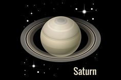
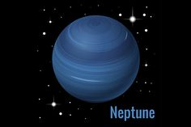

Saturn |
Venus |
Jupiter |
Neptune |
|
|---|---|---|---|---|
Images of: |
 |  | ||
Orbital Inclincation |
2.5 | 3.4 | 1.3 | 1.8 |
Mass(1024kg) |
568 | 4.87 | 1898 | 102 |
Density (kg/m3) |
687 | 5243 | 1326 | 1638 |
Rotation Period (hours) |
10.7 | -5832.5 | 9.9 | 16.1 |
Escape Velocity (km/s) |
35.5 | 10.4 | 59.5 | 23.5 |
Gravity (m/s2) |
9.0 | 8.9 | 23.1 | 11.0 |
Length of Day (hours) |
10.7 | 2802.0 | 9.9 | 16.1 |